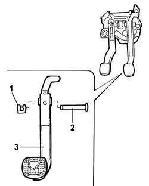

3330B22 BRAKE PEDAL - R.R. for versions with manual gearbox
- Path
- Procedures > 33 BRAKES > 3330 HYDRAULIC BRAKING SYSTEM > 3330B PEDAL UNIT > 3330B22 BRAKE PEDAL - R.R. for versions with manual gearbox
- Kind
- repair procedure (removal / refitting; the operation number is the code)
- Applies to
- engines: 2.0 TB, 2.4 20V, 2.4 JTD 10V, 2.4 JTD 20V; all production periods
- Interactive page
- https://sloeber94.github.io/elrnDB-lThss/en/#/78588
Applies to: engines: 2.0 TB, 2.4 20V, 2.4 JTD 10V, 2.4 JTD 20V; all production periods
 Removing
Removing
 Refitting
Refitting- Disconnect the negative battery terminal.
Applies to: engines: 2.4 JTD 10V, 2.4 JTD 20V; all production periods
Applies to: engines: 2.4 20V; all production periods
See in Op. 5580A36 Switch on brake pedal for cruise control - R.R.
Applies to: engines: 2.0 TB; all production periods
See in Op. 5580A36 Switch on brake pedal for cruise control - R.R.
Applies to: engines: 2.0 TB, 2.4 20V, 2.4 JTD 10V, 2.4 JTD 20V; all production periods
1. Release the steering column universal joint (1a) undoing the bolt (1b) fixing it to the steering box.
2. Working at the rear of the brake pedal, press the white retaining tabs (2a) securing the brake servo push rod (2c) to the brake pedal (2b).
Applies to: engines: 2.0 TB, 2.4 20V, 2.4 JTD 10V, 2.4 JTD 20V; all production periods
1. Remove the black retaining device (1a), then release the brake servo push rod (1b) from the brake pedal (1c) and keep the brake servo push rod spherical head housing cover (1d).
Applies to: engines: 2.0 TB, 2.4 20V, 2.4 JTD 10V, 2.4 JTD 20V; all production periods
1. Remove the brake pedal retaining pin fastening clip.
2. Release the brake pedal retaining pin.
3. Remove the brake pedal from the pedal assembly.

Applies to: engines: 2.0 TB, 2.4 20V, 2.4 JTD 10V, 2.4 JTD 20V; all production periods
Refitting
Removing- Position the brake pedal in the housing on the pedal assembly.
- Fit the brake pedal retaining pin taking care to place it in its housing.
- Secure the brake pedal retaining pin using the retaining spring.
1. Fit the retaining device (1a) on the brake pedal (1b) in order to fit the fastening clips (1c); position the brake servo push rod spherical head housing cover (1d).
Applies to: engines: 2.0 TB, 2.4 20V, 2.4 JTD 10V, 2.4 JTD 20V; all production periods
- Lift up the brake pedal and position the brake servo push rod by the retaining device.
- Press the brake pedal to fit the brake servo push rod on the retaining device.
- Position the steering column universal joint and fasten it to the steering box tightening the fixing bolt to the recommended torque.
 | Value - daNm | Fastening | Component | Ø |
|---|---|---|---|---|
. | 2 | Bolt | STEERING SHAFT MOUNTING | M8 |
Applies to: engines: 2.0 TB; all production periods
See in Op. 5580A36 Switch on brake pedal for cruise control - R.R.
Applies to: engines: 2.4 20V; all production periods
See in Op. 5580A36 Switch on brake pedal for cruise control - R.R.
Applies to: engines: 2.4 JTD 10V, 2.4 JTD 20V; all production periods
Applies to: engines: 2.0 TB, 2.4 20V, 2.4 JTD 10V, 2.4 JTD 20V; all production periods
- Connect the negative battery terminal.